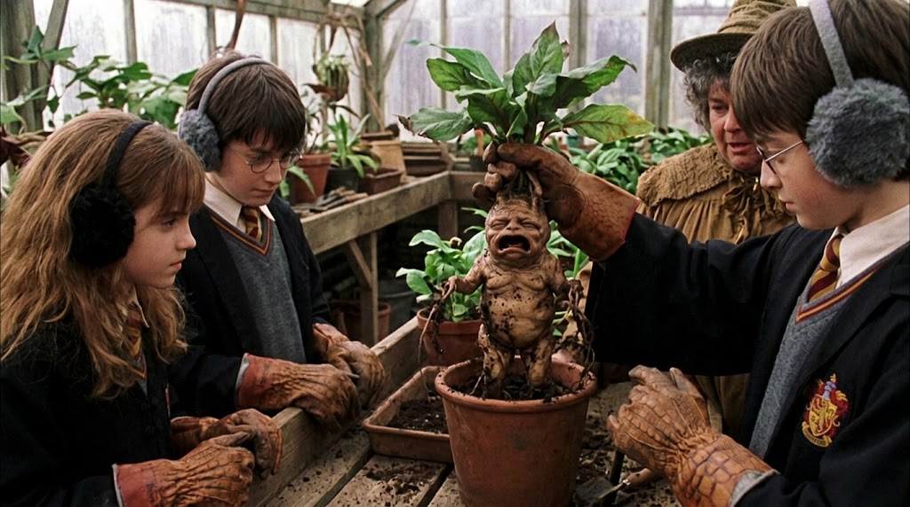
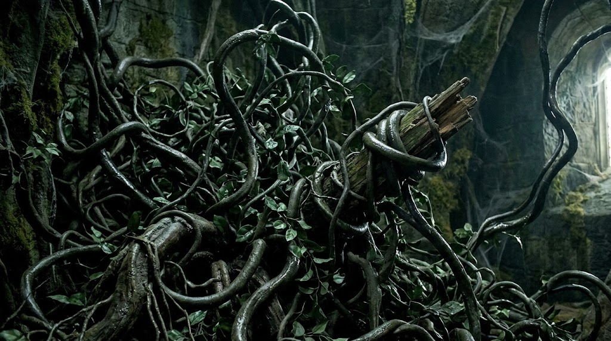
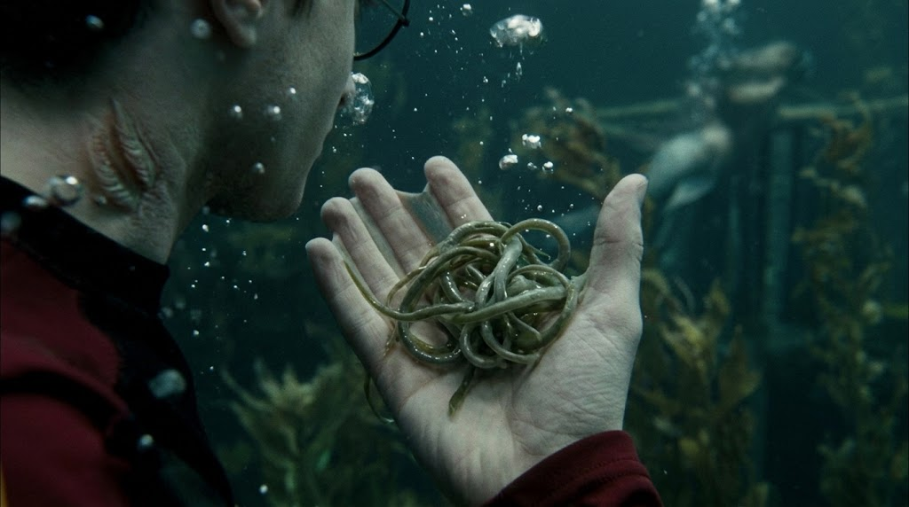

Una mandrágora, también conocida como mandrágula, es una planta mágica y sensible que tiene una raíz que se parece a un ser humano (como un bebé cuando la planta es joven, pero madura a medida que la planta crece). Cuando madura, su grito puede ser fatal para cualquier persona que lo escuche

El lazo del diablo es una planta mágica con la capacidad de constreñir o estrangular cualquier cosa en su entorno circundante o algo que la toque. El lazo del diablo no parece ser común, pero ciertos herbólogos tienen acceso a él

Las branquialgas es una planta mágica que, cuando se come, permite al ser humano respirar bajo el agua.